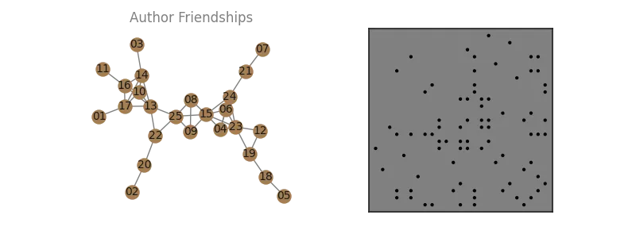
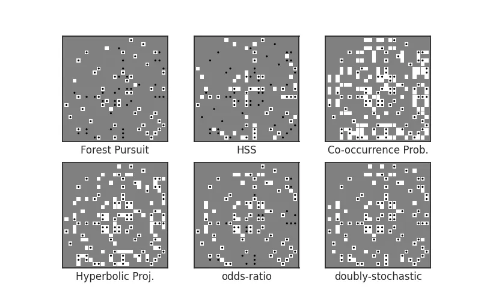
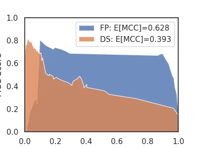
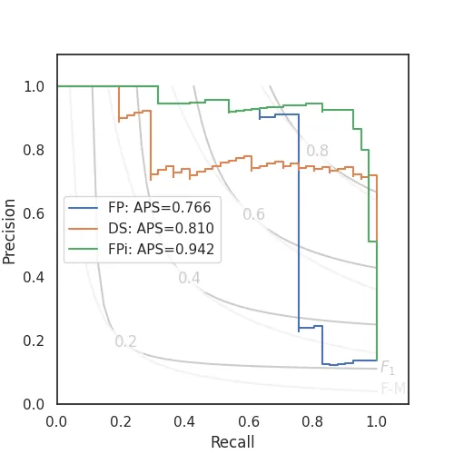

Collaboration Networks
Co-authorship relationships are a common dataset type to use in network analysis. Often these are presented as already being networks, so that each edge is exactly a coathoring (via one or more papers) between two individuals.
However, using this kind of network as a stand-in for the underlying social network among authors can be problematic, since co-occurrence counts inherently imply a dense, clique-based observation model, and when activations can arise from, for instance, a spreading process --- think, asking your colleagues to join you and having them agree---and will therefore cause clique bias. See Sexton (2025).
In this example, we demonstrate three network reconstruction approaches using synthesized collaboration data under a spreading-process assumption.
import numpy as np
import networkx as nx
import seaborn as sns
import pandas as pd
import matplotlib.pyplot as plt
from pathlib import Path
import affinis.associations as aff
from affinis.filter import threshold_connected
from affinis.plots import hinton
rng = np.random.default_rng(42)
sns.set_theme(style='white')
imgpath=Path('../../docs/case-studies/img/')
plt.rc('figure', figsize=(4.0, 3.0))
Problem Setting
Let's create a synthetic network of colleagues. Each "edge" represents a working relationship, where they have a "close enough" to reliably expect asking the other to join them on papers, regularly.
We might expect 1-3 close working relationships for someone in an office, with the occaisional possibility for cliques to be created.
n_authors=25
author_idx = pd.CategoricalIndex((f'author_{i:>02}' for i in range(1,n_authors+1)))
# friends with some cliques
friendships = nx.line_graph(nx.random_labeled_tree(len(author_idx)+1, seed=7))
G = nx.relabel.relabel_nodes(
nx.convert_node_labels_to_integers(friendships),
dict(zip(range(n_authors),author_idx.categories.tolist()))
)
A = nx.adjacency_matrix(G).todense()
L = nx.laplacian_matrix(G).todense()
def draw_G(G, ax=None):
if ax is None:
ax=plt.gca()
pos=nx.layout.kamada_kawai_layout(G)
nx.draw(G, pos=pos, node_size=150,
node_color='xkcd:puce', edge_color='grey', ax=ax)
nx.draw_networkx_labels(G, pos=pos, font_color='k', font_size=10,
labels={n:n.split('_')[-1] for n in G}, ax=ax)
ax.set_title('Author Friendships', color='grey')
return pos
f, ax = plt.subplots(ncols=2,figsize=(8,3))
f.patch.set_alpha(0.)
pos = draw_G(G, ax=ax[0])
hinton(-A, marker='.',ax=ax[1])
plt.savefig(imgpath/'collab-net.webp')

If we let an initial "first" author ask a friend, then let either of them ask a friend, and so on for some number of "asks" (say, until time runs out to add new authors), then we have modeled co-authorship as a kind of spreading process.
Let's simulate this process of authors joining each paper.
- Let's say 1 paper each week, on average, for 1 year.
- For each:
- We select a random individual to intiate it.
- We spread the paper's concept to colleagues.
- A geometrically distributed number of requests to join will be successful,
- Each request comes from an existing author, able to ask any of their connected colleagues to join
For our data, represent each paper as a row, and the authors on a given paper each week as "active" (True) columns in that row.
def sim_papers(n_weeks, L, jumps_param=0.1, rng=np.random.default_rng(2)):
Arw = ((L/np.diag(L)).pipe(lambda df: np.diag(np.diag(df))-df)*0.5)
def sim_week():
n_jumps = rng.geometric(jumps_param)
first = rng.multinomial(1,starting:=np.ones(n_authors)/n_authors)
# second = (rng.random()>0.5)*rng.multinomial(1,starting) # maybe
infected = first #| second
for jump in range(n_jumps):
# print((Arw@infected>1).sum(), infected)
infected = infected | rng.binomial(1, Arw@(infected/infected.sum()))
return infected
yield from (sim_week() for i in range(n_weeks))
L_df = pd.DataFrame(L, columns=author_idx, index=author_idx)
X = np.vstack([paper for paper in sim_papers(52,L_df, 0.05)])
Xdf = pd.DataFrame(X, columns=author_idx)
Author relationship recovery
Now let's attempt to recover as many true relationships as we can for this network, using only the paper co-authorship data we generated.
To perform a thresholding of edge weights relative to the method we pick, we can use the threshold_connected rule.
psct ='min-connect'
# psct=0
baselines = {
# 'Chow Liu Tree': aff.chow_liu(X, pseudocts=psct),
'Forest Pursuit': aff.forest_pursuit(X,pseudocts=psct),
'HSS': aff.high_salience_skeleton(X, pseudocts=psct),
'Co-occurrence Prob.': aff.coocur_prob(X, pseudocts=psct),
'Hyperbolic Proj.': aff.hyperbolic_project(X),
'odds-ratio': aff.odds_ratio(X, pseudocts=psct),
'doubly-stochastic':aff.doubly_stochastic_filter(X, reg=0.1,pseudocts=psct),
}
f,axs = plt.subplots(nrows=2, ncols=3, figsize=(8,5))
for n, (lab, Aest) in enumerate(baselines.items()):
ax = axs.flatten()[n]
# ax.imshow(Aest)
hinton(threshold_connected(Aest), ax=ax)
hinton(-A, marker='.', ax=ax)
ax.set_xlabel(lab)
ax.set_xticklabels([])
ax.set_yticklabels([])
plt.savefig(imgpath/'collab-recover.webp')

Cross-Threshold Evaluation
Since we have the true network (for this synthetic case), we can also compare the overall performance of each algorithm accross all possible threshold values.
The contingency library makes these kinds of binary classification metrics simple to calculate!
from contingency import Contingent
from contingency.plots import PR_contour
from scipy.spatial.distance import squareform
y_true = squareform(A).astype(bool)
y_fp = squareform(baselines['Forest Pursuit'])
y_ds = squareform(baselines['doubly-stochastic'],checks=False)
m_fp = Contingent.from_scalar(y_true, y_fp)
m_ds = Contingent.from_scalar(y_true, y_ds)
Let's look at how the Matthew's Correlation Coefficient (MCC) changes for Forest Pursuit v.s. Hyperbolic Projection:
ax=plt.subplot()
ax.fill(
m_fp.weights, m_fp.mcc,
alpha=0.8,label=f'FP: E[MCC]={m_fp.expected('mcc'):.3f}'
)
ax.fill(
m_ds.weights, m_ds.mcc,
alpha=0.8,label=f'DS: E[MCC]={m_ds.expected('mcc'):.3f}'
)
ax.set(xlim=(0,1),ylim=(0,1),xlabel='threshold',ylabel='MCC Score')
plt.legend()
plt.savefig(imgpath/'collab-mcc.webp')

Meanwhile, precision scores will drop off sharply for sparse, stable predictions like (default) Forest Pursuit, in order to let Recall sufficiently increase.
This illustrates why one might want to use the interaction probability mode (FPi), instead:
m_fpi = Contingent.from_scalar(y_true, squareform(aff.forest_pursuit(X, mode='interaction')))
f = plt.figure(figsize=(5,5))
ax=plt.gca()
PR_contour(ax=ax)
plt.step(
m_fp.recall, m_fp.precision,
where='post',label=f'FP: APS={m_fp.expected('aps'):.3f}'
)
plt.step(
m_hyp.recall, m_hyp.precision,
where='post', label=f'DS: APS={m_hyp.expected('aps'):.3f}'
)
plt.step(
m_fpi.recall, m_fpi.precision,
where='post', label=f'FPi: APS={m_fpi.expected('aps'):.3f}'
)
plt.legend()
plt.savefig(imgpath/'collab-PR.webp')
